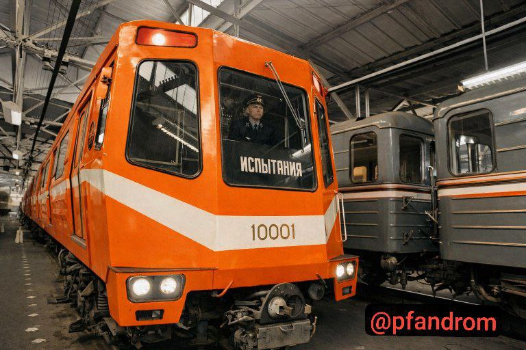
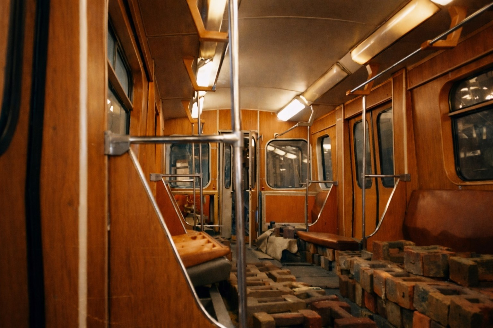
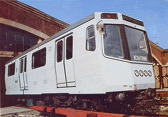
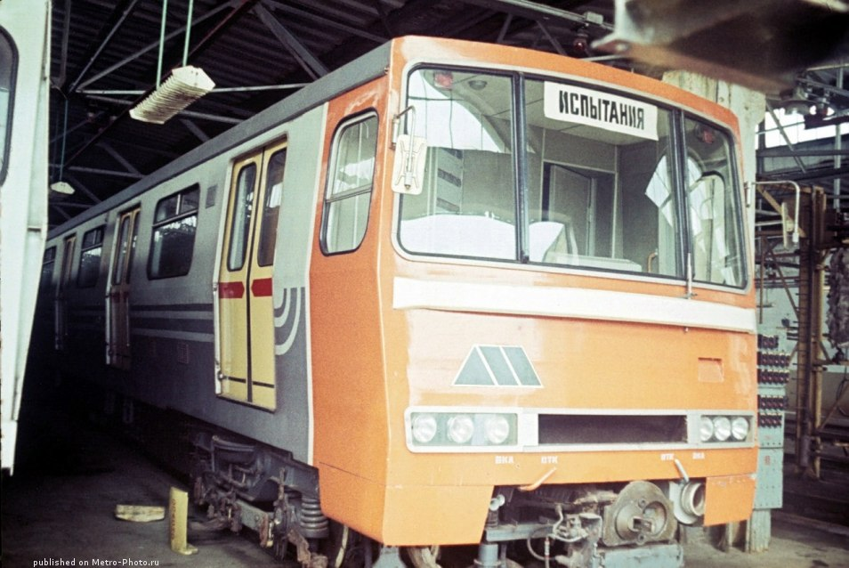
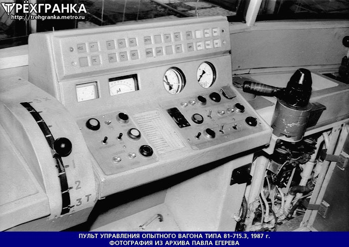

Опытный поезд серии «И»
Опытный поезд серии «И» (заводские обозначения 81-715 для головных и 81-716 для промежуточных вагонов) был построен на Мытищинском машиностроительном заводе в трёх модификациях в период с 1973 по 1985 год. Это был принципиально новый поезд — если раньше все вагоны метро были схожи между собой, то «И» имел уникальную внешность, алюминиевый кузов и множество технических решений, опередивших своё время.
Поезд проходил испытания в Московском метрополитене более десяти лет, но в серию так и не пошёл. Сохранился лишь один вагон — 81-715.2 № 10004 в депо «Красная Пресня».
Предыстория
Первое десятилетие эксплуатации вагонов типа Е показало, что метрополитенам нужны новые виды подвижного состава. Увеличение длины составов, в особенности на Московском метрополитене, всё больше дискредитировало идею производства одинаковых головных и промежуточных вагонов: наличие нескольких неиспользуемых кабин машинистов снижало максимальную наполняемость.
Кроме того, необходимо было повысить надёжность механической части и электрооборудования нового подвижного состава. В качестве временной, переходной меры было принято решение о проектировании новых модификаций вагонов типа Е, и в то же время начать работы по совершенно новому вагону типа И, серийный выпуск которого намечался на 1970 год.
Главный конструктор: А. Г. Акимов. Работы по созданию новых вагонов затягивались, и лишь в 1973 году началась сборка первого вагона. В марте 1974 года первые три опытных вагона были отправлены с Мытищинского машиностроительного завода (ММЗ) в депо «Сокол» Московского метрополитена для испытаний.
Поезд будущего 1973 года
Составность первой версии 81-715.1: 10001—10002—10003
Уникальные особенности
- Принципиально новый дизайн
- Алюминиевый кузов
- Шестигранная форма вагона
- Тиристорно-импульсная система управления
- Рекуперативное торможение
- Кондиционер в кабине машиниста
Период испытаний
1974 — конец 1980-х годов
У модели было много недоработок и проблем, из-за которых она не пошла в серию. Официальная причина — не удалось доработать систему электропривода с тиристорно-импульсной системой управления, а также повысились требования заказчика к пожаробезопасности алюминиевых вагонов.
Модификации серии И
За годы испытаний было построено три состава — три модификации поезда. Каждая имела свою конструкцию и внешний вид.
81-715.1 / 716.1
Первая версия (1973)
- Состав: 10001—10002—10003
- Головных: 2, промежуточных: 1
- Оригинальный дизайн, «поезд будущего»
- Все вагоны после испытаний утилизированы
81-715.2 / 716.2
Вторая версия (1977)
- Головных: 3, промежуточных: 4 (7 вагонов)
- Кузов в 2 раза легче серийного при тех же габаритах
- Затраты на производство кузова в 5 раз меньше, чем у типа Е
- Сохранился вагон № 10004 в ТЧ-4 «Красная Пресня»
81-715.3 / 716.3
Третья версия (1987—1988)
- Головных: 4, промежуточных: 4 (8 вагонов)
- Передняя часть напоминала маску автобуса
- Испытывались в депо «Красная Пресня»
- Последний вагон 81-716.3 № 10011 утилизирован в 2009
Нумерация: все вагоны серии И получили номера в диапазоне 10001—10018. Часть вагонов третьей серии сохранилась фрагментарно — есть информация о «половинках» вагонов 81-715.3/716.3.
Испытания
Конструкция вагонов типа И многим отличалась от вагонов предыдущих серий. В ней реализованы новые технические решения, которые повысили надёжность основных узлов.
Сборка первого вагона
На Мытищинском машиностроительном заводе начата сборка первого вагона типа И.
Первые три вагона в депо «Сокол»
Опытные вагоны 81-715.1/716.1 отправлены для испытаний в Московский метрополитен.
Испытания второй версии
Состав 81-715.2/716.2 проходил испытания в Московском метрополитене. Межведомственная комиссия рекомендовала к изготовлению опытно-промышленную партию.
Испытания третьей версии
В депо «Красная Пресня» испытывались 7 опытных вагонов типа И — третий состав 81-715.3/716.3.
Прекращение работ
Опытные работы по вагонам серии И прекращены. Официальные причины — не удалось доработать систему электропривода с ТИСУ и повысились требования к пожаробезопасности алюминиевых вагонов.
Планы, которым не суждено было сбыться: при разработке модели закладывалась возможность поставок после завершения испытаний на первые участки Нижегородского, Новосибирского и Самарского метрополитенов. Также планировалась эксплуатация в Днепропетровском метрополитене. Однако из-за непростого хода испытаний от этой идеи отказались в пользу обычных 81-717.5/714.5.
Конструкция
Кузов и вместимость
Кузов вагонов типа И выполнен из высокопрочного алюминиевого сплава, вследствие чего вагоны были на 3 т легче вагонов типа Е. Однако это поставило перед заводчанами немало проблем, так как сварка алюминиевых конструкций — более сложный процесс, чем сварка стальных.
Новая шестигранная форма кузова позволила увеличить вместимость вагона на 25—30 пассажиров. Максимальная скорость была увеличена до 100 км/ч против 90 у вагонов типа Е.
Электрооборудование
На вагоне применён двигатель типа ДК-117 с последовательным возбуждением. Регулирование напряжения и возбуждения двигателя осуществлялось с помощью тиристорно-импульсного регулятора (ТИСУ). Это позволило бы улучшить пуско-тормозные характеристики за счёт поддержания постоянного по величине тока двигателя.
Главное преимущество такой системы — возможность рекуперативного торможения. По данным завода «Динамо», возврат электроэнергии в контактную сеть должен был составить 5—12 % от энергии, затраченной на тягу поездов.
Вспомогательные системы
- Принудительная вентиляция салона — повышала надёжность воздухоснабжения при остановке поездов в тоннеле.
- Статический тиристорный преобразователь для питания цепей управления, подзарядки аккумуляторной батареи и люминесцентного освещения салона.
- Пневматические центральные рессоры с автоматическим регулированием прогиба в зависимости от нагрузки (вместо стальных).
- Кабина машиниста с улучшенной планировкой и кондиционером.
- Возможность работы совместно с системами поездной автоматики; управление поездом намечалось полностью автоматизировать.
Технические характеристики
| Параметр | Значение |
|---|---|
| Главный конструктор | А. Г. Акимов |
| Годы постройки | 1973—1985 |
| Завод | Мытищинский машиностроительный завод |
| Обозначения | 81-715 / 81-716 |
| Нумерация | 10001—10018 |
| Тип токосъёма | Нижний боковой контактный рельс |
| Род тока и напряжение | 750 В постоянного тока |
| Типы вагонов | Мг / Мп |
| Число вагонов в составе | 2—8 |
| Композиция состава | Мг + 0…6×Мп + Мг |
| Полная вместимость | 324 / 353 чел. |
| Сидячих мест | 40 / 44 |
| Длина вагона | 19 210 мм |
| Ширина | 2 820 мм |
| Высота | 3 700 мм |
| Диаметр колёс | 780 мм |
| Ширина колеи | 1 524 мм |
| Масса тары | 31 / 30 т |
| Материал вагона | Высокопрочный алюминиевый сплав |
| Выходная мощность | 4 × 100 кВт |
| Тип ТЭД | ДК-117 |
| Макс. скорость | 100 км/ч |
| Макс. служебная скорость | 80 км/ч |
| Ускорение при пуске | 1,2 м/с² |
| Ускорение при торможении | 1 м/с² |
| Электрическое торможение | Электродинамическое (рекуперативное) |
Где сейчас находятся вагоны
81-715.1 / 716.1
Местонахождение и судьба неизвестны
Оригинальный состав 10001—10002—10003 после испытаний был полностью утилизирован.
81-715.2 / 716.2
Москва, ТЧ-4 «Красная Пресня»
Сохранился один вагон № 10004, который планируется восстановить для музея вагонов Московского метрополитена. Остальные вагоны этой серии утилизированы до 2000-х годов.
81-715.3 / 716.3
Фрагментарно сохранились
Последний вагон № 10011 стоял в депо «Красная Пресня» до утилизации в 2009 году. На 2024 год есть информация о сохранившихся «половинках» вагонов третьей серии.
Итог: поезд серии И получился отличным, однако он не прошёл испытания и не поступил в производство. Сегодня его нельзя встретить в метро — сохранился лишь один вагон, ожидающий реставрации в депо «Красная Пресня».
Фотогалерея

📸 ТАСС
🎨Колоризация: pfandrom

📸 ???

📸 ???

📸 ???

📸 архив Павла Егерева
Нажмите на фото для увеличения
«Поезд „И“ опередил своё время. Его смелый дизайн и новые технические решения могли бы изменить облик Московского метро, но недоработки и проблемы не позволили этому случиться. Тем важнее сохранить то, что от него осталось».